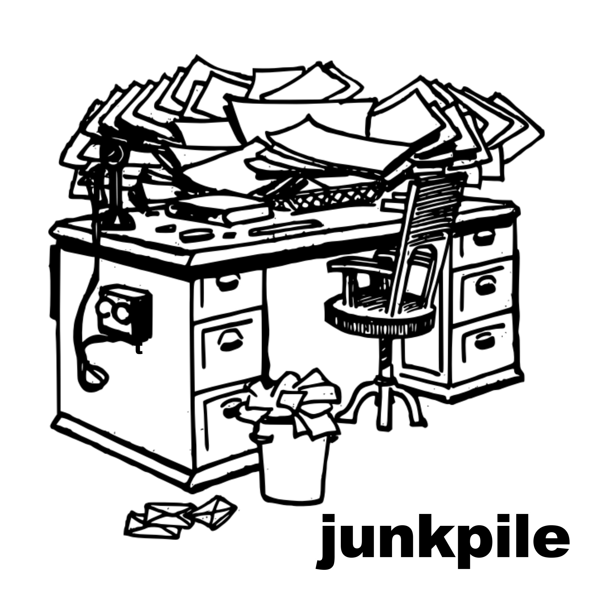

01
Get running
Pick the smallest matching example, install its local dependencies, and launch it without reading the entire architecture guide.
Five-minute path →Coding templates for live visual art
Junkpile is a library of small, inspectable Tauri applications. Run a known baseline in minutes, understand every layer when you are ready, then turn it into your own visual tool.

How to use the library
Pick the smallest matching example, install its local dependencies, and launch it without reading the entire architecture guide.
Five-minute path →Trace input, state, rendering, WebView behavior, Rust responsibilities, and Tauri v1/v2 configuration through diagrams and file maps.
Architecture path →Keep a working baseline intact, branch it, change one layer at a time, and document the behavior that makes your new example unique.
Extension path →The Tauri v2 folders are real v2 ports, but they do not become native Metal, Vulkan, DirectX, or wgpu renderers merely because they use Tauri v2. The graphics in every current example remain JavaScript/WebGL inside the operating system WebView.
HTML / JavaScript / p5.js / WebGL
↓
Tauri WebView
↓
OS web rendering stack
Rust wgpu renderer
↓
Native Metal / Vulkan / DX12 surface
Shared architecture
The examples are deliberately small enough to trace from a physical control or HTML slider all the way to the final pixels.
Shared runtime stack
Rust sits beside this path: it starts Tauri, owns native integrations when needed, and hosts the relay used by two-window examples.
Technology families
Each family isolates one graphics or input architecture. Single-window and two-window variants reveal the cost of adding a transport layer.
p5.js creates the WEBGL canvas, manages the animation loop, compiles embedded shader strings, and uploads uniforms through a compact creative-coding API.
Explore p5.js →These examples request a WebGL context, compile and link shaders, create a full-screen quad, locate uniforms, resize the viewport, and issue draw calls without a graphics framework.
Explore Raw WebGL →The fragment shader lives in shader.frag and is loaded at runtime. This isolates shader authoring from host JavaScript and introduces explicit loading and compile-error handling.
Explore External GLSL →JavaScript requests camera access with getUserMedia, routes the stream through a hidden video element, and uploads each ready frame into a GPU texture for real-time processing.
Explore Webcam →Two framebuffer textures alternate roles. Each frame samples the previous state and webcam texture, writes the next state, displays it, then swaps references.
Explore Feedback →Rust uses midir to enumerate ports and receive messages because Web MIDI support is inconsistent across desktop WebViews. Structured events are then emitted to JavaScript.
Explore MIDI →Rust binds UDP port 9000 with Tokio, decodes OSC packets with rosc, and emits messages into JavaScript, where addresses are mapped to visual parameters.
Explore OSC →Window topology
A single-window example is the simplest mental model. A two-window example adds an explicit relay so controls and output can live on different displays.
Single-window architecture
Two-window WebSocket architecture
Complete database
Filter all 22 projects by Tauri generation, rendering family, or window topology. Each project has its own local README with a file map, architecture diagram, run commands, extension notes, and troubleshooting.
Stateful image processing with alternating framebuffer textures. Controls and renderer share one JavaScript context.
Stateful image processing with alternating framebuffer textures. Controls and canvas are separate windows connected through a Rust loopback relay.
Raw WebGL with shader source kept in a separate file. Controls and renderer share one JavaScript context.
Raw WebGL with shader source kept in a separate file. Controls and canvas are separate windows connected through a Rust loopback relay.
Native hardware control routed from Rust into a p5.js renderer. Controls and renderer share one JavaScript context.
Network control over UDP for creative software ecosystems. Controls and renderer share one JavaScript context.
The quickest path from a creative sketch to a desktop app. Controls and renderer share one JavaScript context.
The quickest path from a creative sketch to a desktop app. Controls and canvas are separate windows connected through a Rust loopback relay.
Live camera capture uploaded into a WebGL texture every frame. Controls and renderer share one JavaScript context.
Live camera capture uploaded into a WebGL texture every frame. Controls and canvas are separate windows connected through a Rust loopback relay.
The browser graphics pipeline with every important step visible. Controls and renderer share one JavaScript context.
The browser graphics pipeline with every important step visible. Controls and canvas are separate windows connected through a Rust loopback relay.
Stateful image processing with alternating framebuffer textures. Controls and renderer share one JavaScript context.
Stateful image processing with alternating framebuffer textures. Controls and canvas are separate windows connected through a Rust loopback relay.
Raw WebGL with shader source kept in a separate file. Controls and renderer share one JavaScript context.
Raw WebGL with shader source kept in a separate file. Controls and canvas are separate windows connected through a Rust loopback relay.
The quickest path from a creative sketch to a desktop app. Controls and renderer share one JavaScript context.
The quickest path from a creative sketch to a desktop app. Controls and canvas are separate windows connected through a Rust loopback relay.
Live camera capture uploaded into a WebGL texture every frame. Controls and renderer share one JavaScript context.
Live camera capture uploaded into a WebGL texture every frame. Controls and canvas are separate windows connected through a Rust loopback relay.
The browser graphics pipeline with every important step visible. Controls and renderer share one JavaScript context.
The browser graphics pipeline with every important step visible. Controls and canvas are separate windows connected through a Rust loopback relay.
Documentation ethos
Every claim is separated by evidence level. “Static reviewed” means the source and configuration were inspected. It does not secretly mean every build, operating system, camera, controller, or network path has been runtime-tested.
Read validation status